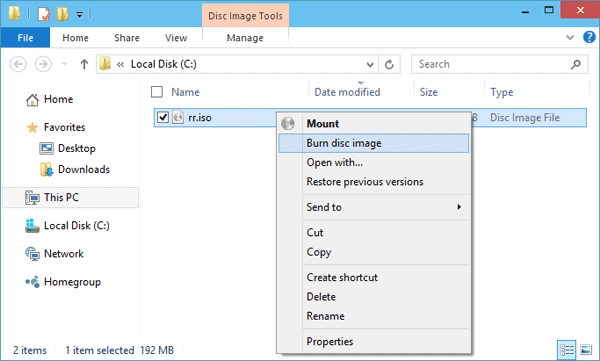
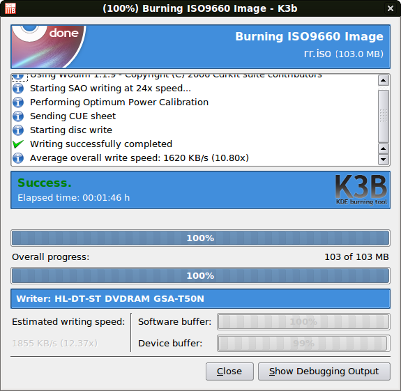
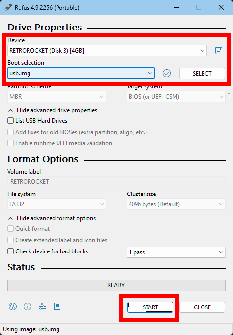
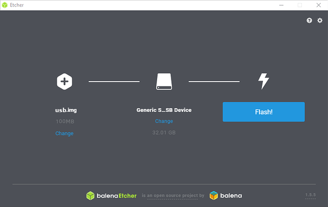

Creating Boot Media
Retro Rocket is distributed in two formats:
- ISO (rr.iso) – for writing to a CD/DVD.
- USB image (usb.img) – for writing directly to a USB stick.
You will need to create boot media before you can start Retro Rocket on real hardware.
Burning an ISO (CD/DVD)
Windows
- Right-click the .iso file and choose Burn disc image.
- Alternatively, use a tool such as ImgBurn.

Linux
- Most desktop environments provide a “Write to Disc” option when right-clicking the ISO.
- GUI tools such as Brasero or K3b can also be used.
- Command-line users may use wodim or cdrecord.

Writing the USB Image (USB stick)
Windows
- Use Rufus.
- You may be prompted to run the program as Administrator, be sure to accept the prompt.
- Select your USB stick, choose the usb.img file, and let Rufus write it in DD mode (this is the default).
- This will erase the contents of the stick.

Linux (recommended tools)
- balenaEtcher – Select the usb.img, select your USB stick, and press Flash. Cross-platform, easy, and safe.
- GNOME Disks – Right-click your USB stick
- Click on Restore Disk Image and choose usb.img.

Linux (advanced)
- Command-line users may use dd, but be very careful:
sudo dd if=retro-rocket.usb.img of=/dev/sdX bs=4M status=progress
sync
Replace /dev/sdX with your USB device (not a partition). Warning: Selecting the wrong device will destroy its contents.
Notes
- The ISO and USB image are not interchangeable. Use the correct file for the media you are creating.
- Always double-check which device you are writing to. Writing an image will erase existing data.
- Some machines may require adjusting BIOS/UEFI settings to boot from CD/DVD or USB.